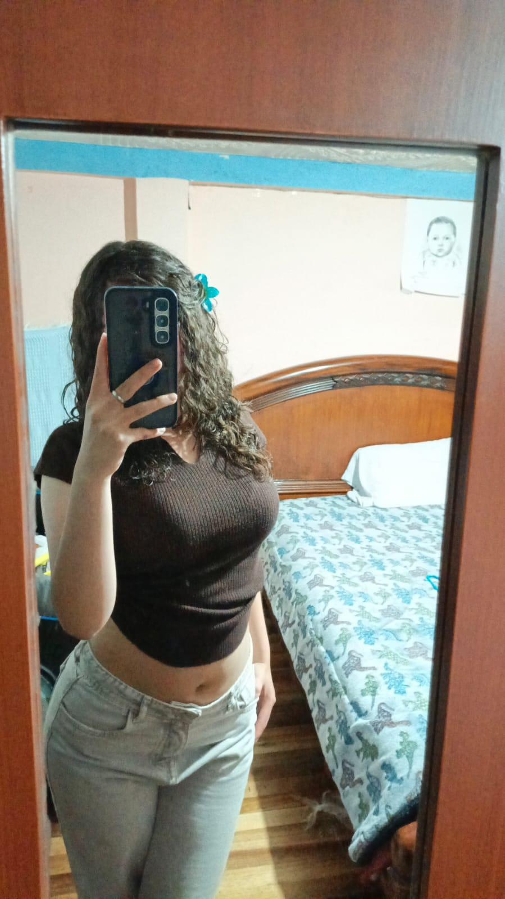
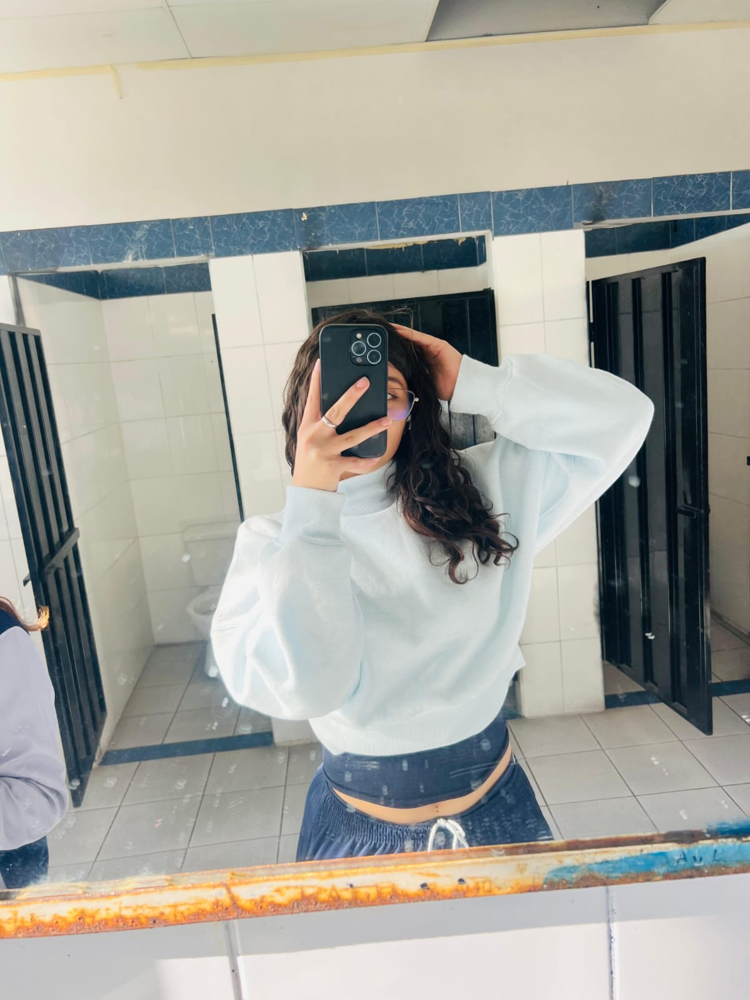
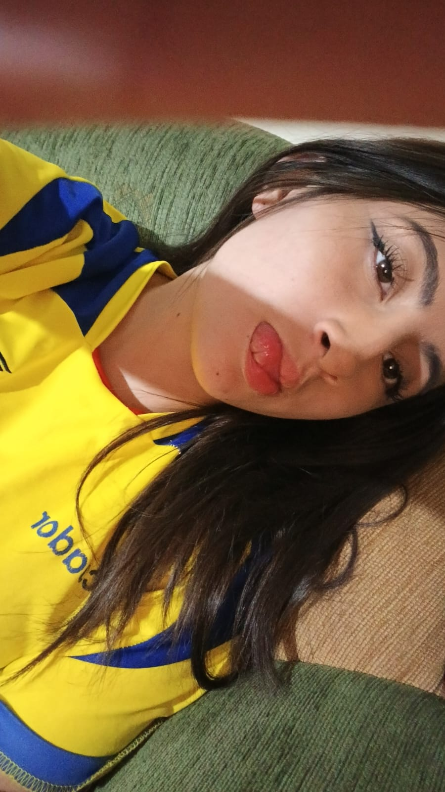
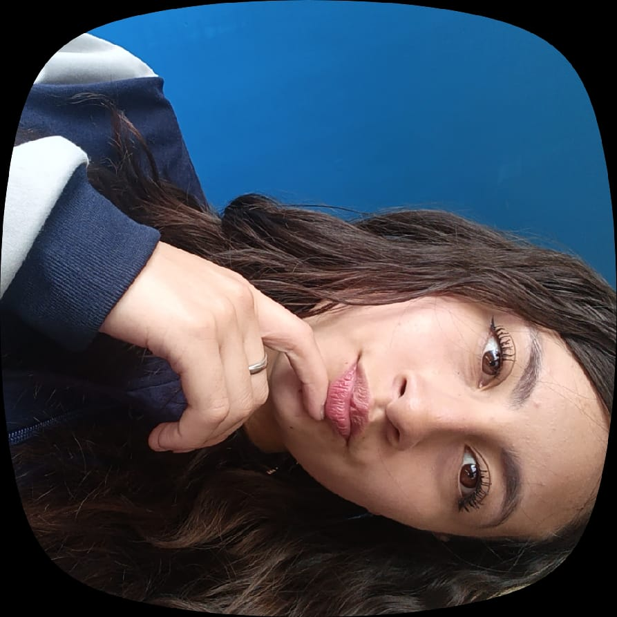
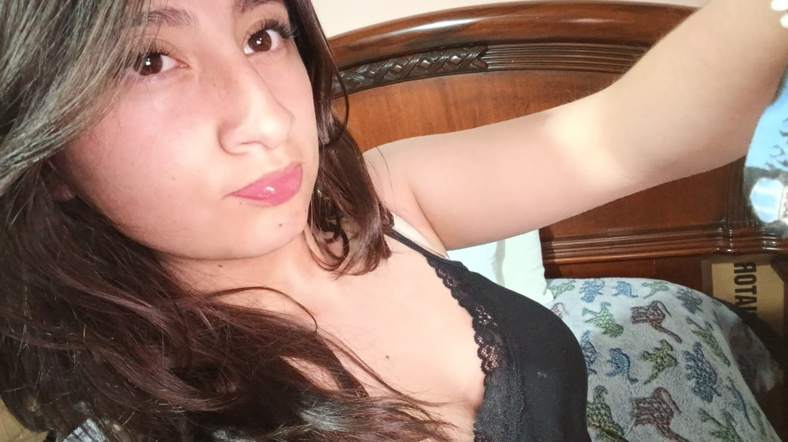

Una despedida sincera
Lo que nunca supe decirte
Mi Anto…

Escribo esta carta porque creo que ya entendí que, aunque mi corazón quiera seguir intentando algo contigo, no puedo quedarme esperando donde quizás nunca iba a pasar nada.
Desde que entré a la banda y te vi, algo en mí se quedó contigo. Ni siquiera te conocía bien, pero había algo en tus ojos y en tu manera de ser que me llamó muchísimo la atención.

Me ahuevé bastante en escribirte porque me decían que tenías novio, y no quería meterme donde no debía. Después de unos meses me animé a hablarte otra vez y te pregunté directamente si estabas sola, si no había nadie más… y me dijiste que sí.
Ahí fue cuando me ilusioné de verdad y te dije que intentáramos algo. Cuando me respondiste “bueno”, sentí bonito, porque pensé que tal vez sí podía pasar algo entre nosotros.

Aunque nunca tuvimos una salida, yo sí me emocionaba contigo. Me gustaba verte, esos abrazos cuando me pedías que te amarcaba, hablar contigo y tus ojitos que siempre me sacaban una sonrisa.
Después de la caravana del Bolívar vi esa destacada del 7 de febrero y ahí entendí muchas cosas. Tal vez yo me ilusioné más de la cuenta, pero sí me dolió, porque mientras yo estaba intentando algo contigo, sentí que ya había alguien más ocupando un lugar que yo quería ganarme contigo.

Y aun así… lo quise intentar otra vez. Pero poco a poco entendí que quizás tú nunca quisiste algo serio conmigo, o tal vez simplemente yo no soy el hombre que estás buscando.
Aunque a veces te demorabas en contestar, o incluso había momentos donde ni me respondías, yo seguía ahí porque de verdad me importabas. Y aunque no se dio nada entre nosotros, sé el cariño sincero que llegué a sentir por ti.

Solo quería que supieras que nadie te va a amar de la manera en que yo lo hice. Nadie te va a mirar con los ojos con los que yo te veía, ni te va a respetar de la forma en que yo pensaba hacerlo contigo.
Porque si algún día se hubiera dado algo entre nosotros, yo de verdad habría dado todo por hacerte feliz. Y me duele, porque eres una chica súper hermosa, de esas que uno quisiera cuidar bonito y querer en serio.
Nunca me voy a arrepentir de haberte dado esas flores eternas ni de haberte querido de verdad, porque aunque no fuimos nada, tú sí significaste algo para mí.
Y aunque te siga viendo en el colegio o en los repasos de la banda cuando haya, supongo que me tocará saludarte como un amigo más… aunque por dentro me siga doliendo un poco.
Y por último...
Entendí que no puedo obligar a alguien a quererme como yo la quiero.
Así que supongo que esta es mi manera de despedirme de ti.
Cuídate mucho, Anto